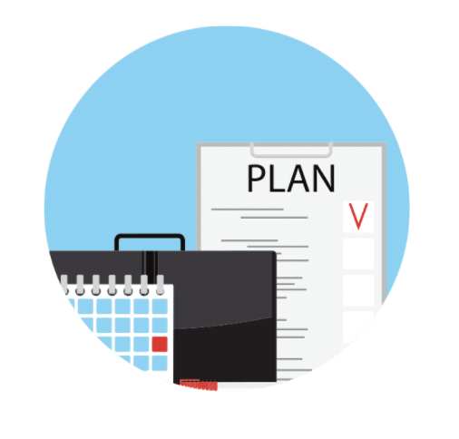

<
>

< bootcamp learning plan >
What is your long term goal and/or career pathway?
My long term goal is be a leader in innovation, digital transformation and create human centric technological infrastructures that can be used in our everyday lives. I plan to contribute as much as I can to make people’s lives easier. My ideal role is creative director, entrepreneur or product developer.
I think I still can connect with the strengths and limitations I talked about in sprint 2, however I now have a better understanding of my practical strengths and weaknesses. I have learned to accept my strength may not be in the technical role of a team at bootcamp but more my ability to problem solve and come up with creative and inviting visions for the end product/experience. I know my major strength is connecting with people, however this is two-sided as I also struggle to put myself out there an become comfortable sharing my ideas without the fear of looking stupid, I will use bootcamp as a platform to transform my relationship with myself surrounding this topic.
My biggest struggle might be holding myself back from contributing as much as I would like. I will definitely have moments where I will struggle at the impact of my self-critical voice, it definitely has dominated me more than I would have liked during foundations but I think being surrounded by like-minded people who also have an understanding of the self-critical voice will help a lot in holding myself accountable. I also think making sure I don’t lose focus, especially when working in a team the workflow might be dominated by someone else’s habits, and hopefully there will be space for everyone to adapt but also follow their healthy habits they have previously created and know works best for them.
I still want to work on authentic communication and especially develop the habit of asking questions, as I know this is a way of learning that works for me. I also want to work on developing leadership skills, as I think these are vital for anyone’s development. Also improving on my reflective skills.
My expectation is definitely just being in a safe environment that allows for that growth mindset, asking questions and being a stand for all of us in the bootcamp. It’s already amazing to see the amount of support we get from facilitators in comparison to other learning institutes I have been involved in. I think anyone who is involved in bootcamp is also at part of their life where they are going through a transformation/transition, this can be daunting and scary and having a team that keep this in mind and nurture that would also be amazing.
I want to really develop great work habits during this bootcamp. I am going to plan every week and day my goals for period. I think also making an effort to learn how other learners go about their process will allow me to contribute to them in the right way as well as learn through their habits. I am going to hold myself accountable every step of the way through bootcamp, I am going to ask for help when I need it and remember that this is not university where help is considered taboo. I also want to be a person that others can trust to complete work to a high standard and come talk to, so I can provide that safe space as they have provided it to me. I am going to be assertive during this time with industry/community representatives and I also want to ascertain the value I would bring to the industry.